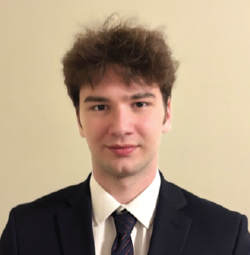

Megan Ken
Scripps Fellow, Principal Investigator | mken@scripps.edu

Julia Polay
Lab Administrative Coordinator | jpolay@scripps.edu
While my own background stems from an education and career outside of the sciences, I have spent the better part of the last decade surrounded by chemists. My previous experiences have demanded acute organization, clear communication, and an eye for detail. Nothing gives me more fulfillment than supporting a team of great minds and helping them achieve results.

Suraj Ugrani
Post-Doctoral Associate | sugrani@scripps.edu
I am a chemical engineer by training with a keen interest in computational structural biology. During my master's and subsequent research fellowship at the Indian Institute of Technology Bombay, I engaged in experimental research on spray drying of lipid-encapsulated drug nanoparticles and flavor particles. As a chemical engineering PhD student at Purdue University, my work aimed to understand protein-ligand-solvent interactions to improve structure-based drug discovery. I employed molecular modeling techniques alongside machine learning models to build structure-property relationships. Here, my research will focus on addressing the challenges and limitations of applying molecular docking to RNA targets, discovery of RNA therapeutics, and RNA structure prediction.

Deng Li
Post-Doctoral Associate | dli@scripps.edu
I earned my Ph.D. in Bioengineering from Northeastern University, where my research focused on developing and applying advanced computational modeling methods, including molecular dynamics simulations, alchemical binding free-energy calculations, induced-fit docking, and machine learning, to elucidate protein dynamics and protein-glycan interactions. Here at Scripps, in Dr. Ken’s lab, I will leverage this computational expertise, integrating it with experimental approaches like NMR and cryo-EM, to investigate RNA dynamics and its interactions with proteins and small molecules, contributing to the development of RNA-based therapeutics. Outside the lab, I enjoy hiking and running, and have summited over a third of Taiwan’s 100 highest mountains (all above 3,000 meters).

Catherine Li
Graduate Student | cali@scripps.edu
I received my bachelor's degree in Biology from the University of Pennsylvania. At Penn, I conducted undergraduate and post-baccalaureate research in the lab of Dr. Shelley Berger, where I studied epigenetic regulators of senescence and aging as well as gene activation by nuclear speckles. I then worked at Aro Biotherapeutics as part of the preclinical research team, developing protein-siRNA conjugate drugs for rare genetic disorders and immune-mediated diseases. After matriculating at the Skaggs Graduate School of Chemical and Biological Sciences in 2023, I joined the Ken Lab as a PhD student. I am interested in studying RNA structural dynamics of HIV using biologically-relevant models and am excited about the application of these findings to RNA-targeted drug development.

Jessica Vance
Graduate Student | jvance@scripps.edu
As a scientist, I am interested in exploring the dynamics and structures of RNA. My current projects in the Ken Lab focus on identifying rare RNA conformational changes through NMR and observing the folding pathway of the HIV genome. I earned my bachelor’s degree in Molecular and Cell Biology from the University of California, Berkeley, where I conducted undergraduate research in Prof. Jamie Cate’s lab as part of the NSF Center for Genetically Encoded Materials. There, I explored ways to expand the substrate scope of ribosome mediated peptide bond formation through chemical changes to the translational machinery. Beyond my lab-work, I am passionate about expanding science communication and creating development opportunities in science.

William Guo
Graduate Student | wguo@scripps.edu
I completed my bachelor’s degree in Natural Sciences at the University of Cambridge. There, I did my undergraduate research in the lab of Prof. Louise Boyle, studying TAPBPR (Tapasin-Binding Protein Related) in a mouse background and its implications for human TAPBPR and cancer. I then worked in the lab of Dr. Leslie Beh at the Agency for Science, Technology and Research, developing CRISPR-based gene editing tools. As a scientist, I am broadly interested in nucleic acids, as well as developing tools to understand them. Outside of lab, I enjoy playing sports, chess and hiking the great outdoors of the west coast.

Shawn Sandhu
Jacob Scherba 
Paolo Sinopoli
Emily Lahr
Priya Singh
Research Technician | ssandhu@scripps.edu
I graduated from Michigan State University (MSU) with a bachelor's degree in chemistry. As an undergraduate at MSU, I worked as a researcher in Dr. Marcos Dantus' laboratory to study chemical reactions following strong-field ionization. I combined information from both femtosecond laser experiments and ab initio molecular dynamics to deduce mechanistic details of the reactions studied. After completing my undergrad, I joined Dr. Ken's lab to study the structural dynamics of RNA. I am looking forward to seeing our findings being used to help develop RNA targeting drugs.

Research Technician | jscherba@scripps.edu
I graduated from Harvard University with an SB in Bioengineering and later completed my MS in Biomedical Engineering at Duke University. My research has focused on the relationship of structure, mechanics, and function at multiple biological scales, and I am currently using my background in polymer science and machine learning to develop tools for RNA structure prediction. I am thrilled to be working as a member of the Ken Lab using graph theory to predict the structure of RNA with the goal of predicting the structural impacts of sequence mutation in a high-throughput manner. We are endeavoring to leverage this interface of nanobiomechanics and computation to further the field of RNA therapeutics with the goal of rationally improving treatment strategies.
Undergraduate Intern | psinopoli@scripps.edu
I am an undergraduate student studying Molecular Genetics at The Ohio State University. At Ohio State, I am part of Dr. Anita Hopper’s lab where I research the fundamental biology of tRNAs using computational and molecular biology methods. Through attending local conferences, I gained an interest in RNA biophysics. I am excited to build on that interest as a summer intern in Dr. Ken’s lab. Here, I will research the early steps of HIV assembly.
Undergraduate Intern | elahr@scripps.edu
Hi! My name is Emily, and I’m currently a biology major at Southwestern College pursuing medicine. This summer, I’m thrilled to be interning with the Ken Lab, where I have the exciting opportunity to explore hands-on research and deepen my understanding of molecular biology. I’m assisting with a project focused on studying protein-RNA interactions and their role in cellular processes. I’m excited to merge my passion for medicine and science through this experience. In my free time, I enjoy playing tennis, swimming, traveling, and cooking.
Undergraduate Intern | priyas@scripps.edu
Hello! I am an undergraduate at the University of California, San Diego, majoring in Pharmacological Chemistry. Previously, I assisted with bacteriophage therapy research as part of the Pride Lab at the UCSD School of Medicine, and I currently work as a hospital microbiology laboratory assistant. I am excited to expand my research horizons by working with the Ken Lab this summer where I will be involved in RNA conformational studies. I will be focused on elucidating the conditions required for HIV 5' UTR dimerization by investigating the effects of ions, temperature, and time-dependent factors.
Previous members
Jenny Nguyen | Undergraduate Intern 2024Currently a PhD student at Colorado University - Boulder
Barbara Zazueta Gonzalez | Undergraduate Intern 2024
Currently an undergraduate student at San Diego State University